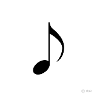

What is rhythm?
Rhythm, at its most fundamental definition, is a series of vibrations that the human ear percieves as a pattern. In music notation. rhythm is represented by notes; symbols on a music staff that tell a musician what pitch to play, when, and how long to play it. A time signature (see How to read a music staff) tells a musician how many beats are in a measuse as well as what note value is equivalent to one beat. Let's look at some different note values:
Quarter Note
Often considered to be the equivalent to one beat, and also often seen as the reference in which other note values are compared, the quarter note consists of exactly 1/4 of a measure in common time (4/4). This is typically the first note value a musician learns. Quarter notes consist of a dot and line extruding from the dot, refered to as a "stem" either oreinted up and to the right to the dot, or down and to the left depending on the placement of the note on the staff.
Half Note
Half notes consist of the length of two quarter notes. They are depicted as a quarter note with the center of the dot hollowed out.
Whole Sote
Whole notes consist of the length of four quarter notes or two half notes. Whole notes typically last the equivalent of one bar in common time (4/4). A whole note looks just like a half note without the stem.
Eighth Note
An eighth note typically lasts half as long as a quarter note (though this changes when a song is played using a swing or shuffle feel) and is 1/8th the length of a whole note. Eighth notes look like quarter notes with a little flag (known as a note flag) attatched to the end of the stem.
Sixteenth Note
A sixteenth note typically lasts half as long as an eighth note (again, this can change in a swing or shuffle feel) and is 1/16 the length of a whole note. Sixteenth notes have two note flags rather than one.
Rests
While notes tell a musician when a pitch should be played, a rest tells a musician when they shouldn't play. Each note length symbol has a corresponding rest symbol. The rest symbol also lies on only one line of the staff where as notes appear on different lines or spaces depending on the pitch.
The following line of music consists of four quarter notes, two half notes, a whole note, four quarter notes, eight eighth notes, sixteen sixteenth notes, and finally, a whole note with a rim tap. Each bar of common time consists of one full bar of whatever note value is being used. You can also listen to a snare drum play the sound sample with the audio player below. Count "1 2 3 4" along with the quarter note pulse. Notice how empty it feels during the whole note? Or how rapid it feels during the sixteenth note sequence?